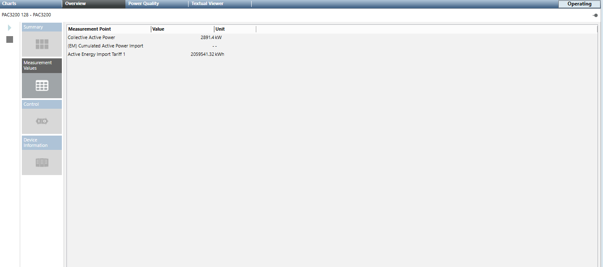
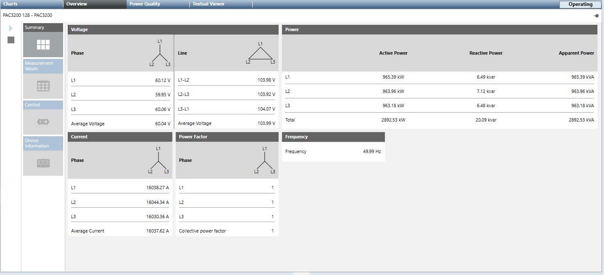
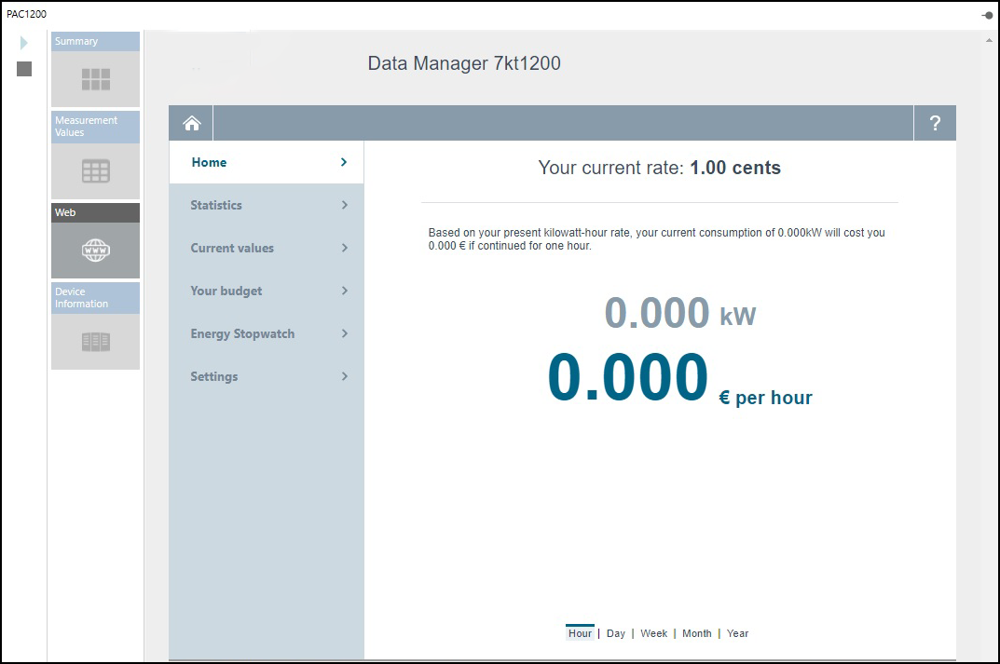
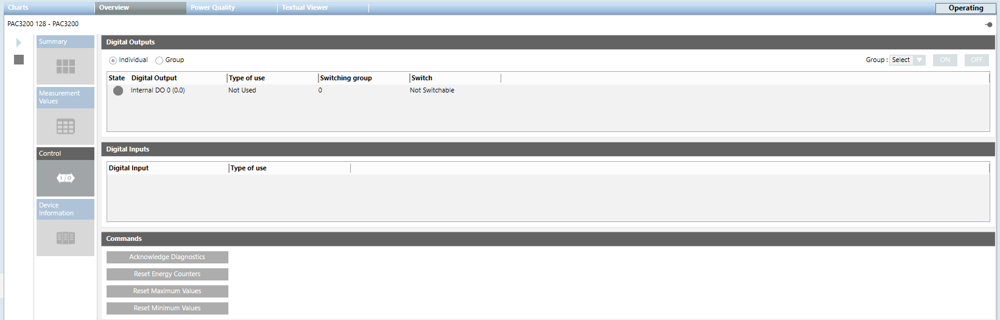
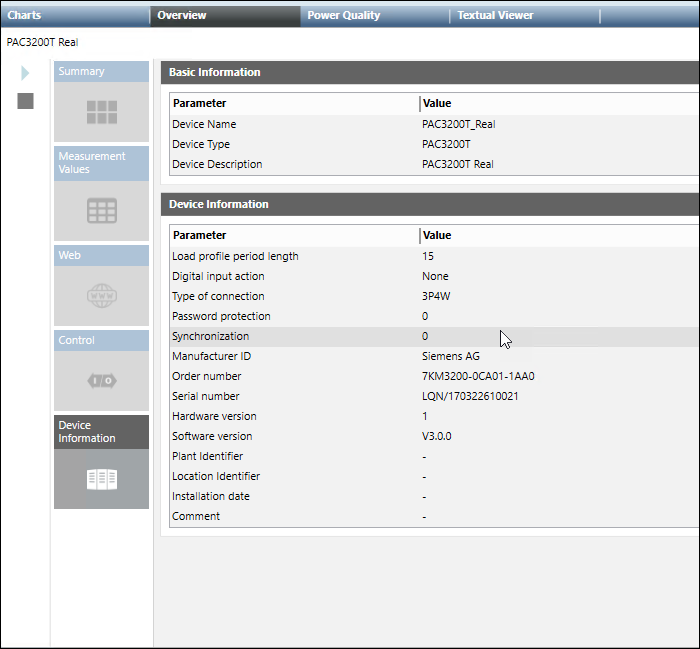

Overview Tab (Power Devices and PQ Devices)
The Overview tab displays the summary of different data point values measured by the devices. It contains the following tiles:
- Summary: Displays the real-time values for Voltage, Power, Current, Power Factor and Frequency.
- Measurement Values: When selected, this tile displays the preconfigured measurement points of the selected device with description, current measured value, and defined unit.

- Web: Allows you to view and edit the device settings online for the devices that have webpages.

NOTE:
Web page may take 10-15 seconds to load, Please wait till the page is fully loaded.- Control: You can view and operate the status and commands of the respective device in this tile. This tile contains the following:
- Digital Outputs: Allows you to switch the digital outputs of the PAC3200, PAC3200T, and PAC4200 devices. For this purpose, you must configure the digital outputs as remote output in the device. You can switch on or switch off the digital output by clicking ON or OFF. The switching state is indicated by the following lamp icon:
- Signal of the digital output is high (1)
- Signal of the digital output is low (0) - Digital Inputs: Displays the digital inputs and its type of use
- Commands: The commands section contains buttons that can be used to change device settings during runtime. The commands can only be transferred if password protection is switched off on the device. Below are the available commands:
- Acknowledge Diagnostics: Acknowledges and resets the diagnosed device performance values.
- Reset Energy Counters: Resets the values for the measurement points to 0.
- Reset Maximum Values: Allows you to update the maximum value.
- Reset Minimum Values: Allows you to update the minimum value.
- Device Information: Displays the information of the device including device name, type, description, manufacturer, hardware/software version, and so on.




NOTE:
When an N-Conductor module is connected to a PAC3200 or a PAC4200 device, the N-Conductor details are displayed. The I5, I6 and In values are displayed in this section. Also, the neutral current measured are also displayed in the Summary tile.